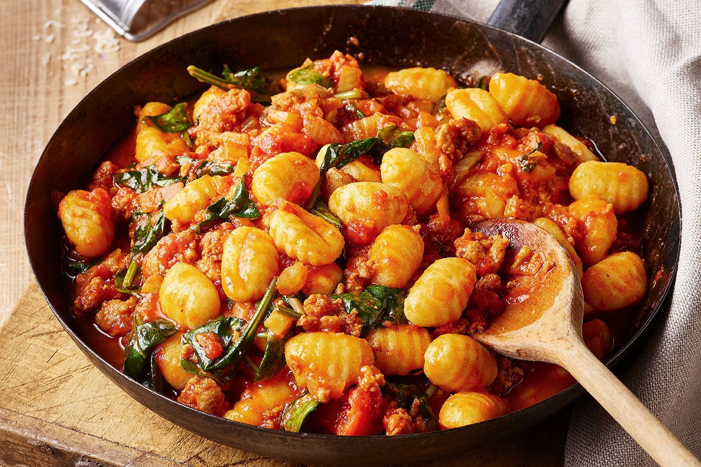

Składniki na 4 porcje
- 400 g kiełbasy z ziołami
- 1 łyżka stołowa oliwy z oliwek
- 1 cebula, drobno posiekana
- 2 cebule kopru włoskiego, pokrojone w kostkę
- 3 ząbki czosnku, wyciśnięte
- 2 x 400 g pomidorów śliwkowych z puszki
- ½ łyżeczki stołowej suszonych płatków chili
- 2 łyżeczki suszonego oregano
- 2 liście laurowe
- 1 łyżka stołowa przecieru pomidorowego
- 3 łyżki stołowych sosu sojowego Kikkoman
- 500 g świeżego gnocchi
- 100 g młodego szpinaku
- Mała paczka bazylii, liście posiekane
- Tarty parmezan do posypania
Przygotowanie
- Rozkrój kiełbasy i wyjmij mięso, oddzielając je od skórki. Rozgrzej olej na szerokiej patelni o wysokich brzegach na dużym ogniu i smaż mięso przez 8-10 minut, rozdzielając je na mniejsze kawałki za pomocą drewnianej łyżki. Kiedy mięso zyska złoto-brązowy odcień, przełóż je na talerz i odstaw na bok.
- Na patelnię dodaj cebulę i koper włoski i smaż je przez 10 minut, aż zmiękną. Dodaj czosnek i smaż przez kolejną minutę. Następnie dodaj pomidory z puszki wraz z 200 ml wody, płatki chili, oregano, liście laurowe, przecier pomidorowy i sos sojowy. Gotuj na wolnym ogniu przez 20 minut, aż lekko zmniejszy się objętość. Dopraw do smaku.
- W międzyczasie zagotuj wodę na dużej patelni i gotuj gnocchi zgodnie z instrukcją na opakowaniu.
- Podczas gdy gnocchi się gotuje, wymieszaj szpinak z sosem, aż przywiędnie. Odcedź gnocchi i wymieszaj z sosem z bazylią. Usuń liście laurowe, rozdziel na 4 talerze i podawaj z parmezanem i dużą ilością świeżo zmielonego czarnego pieprzu.
Powrót na górę strony
Powrót na stronę główną